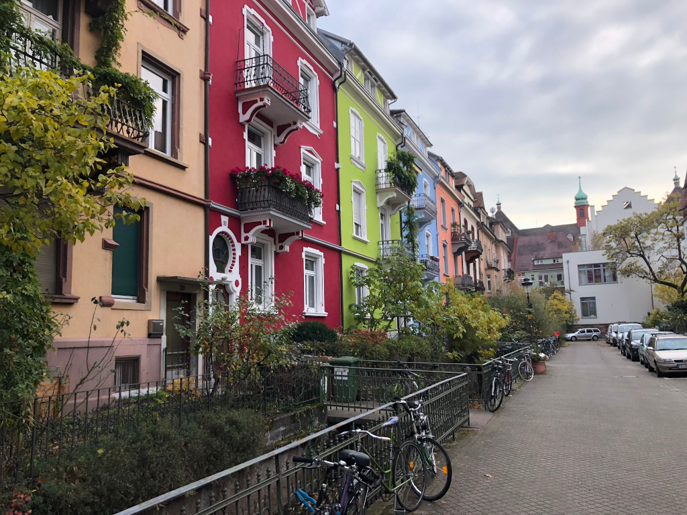
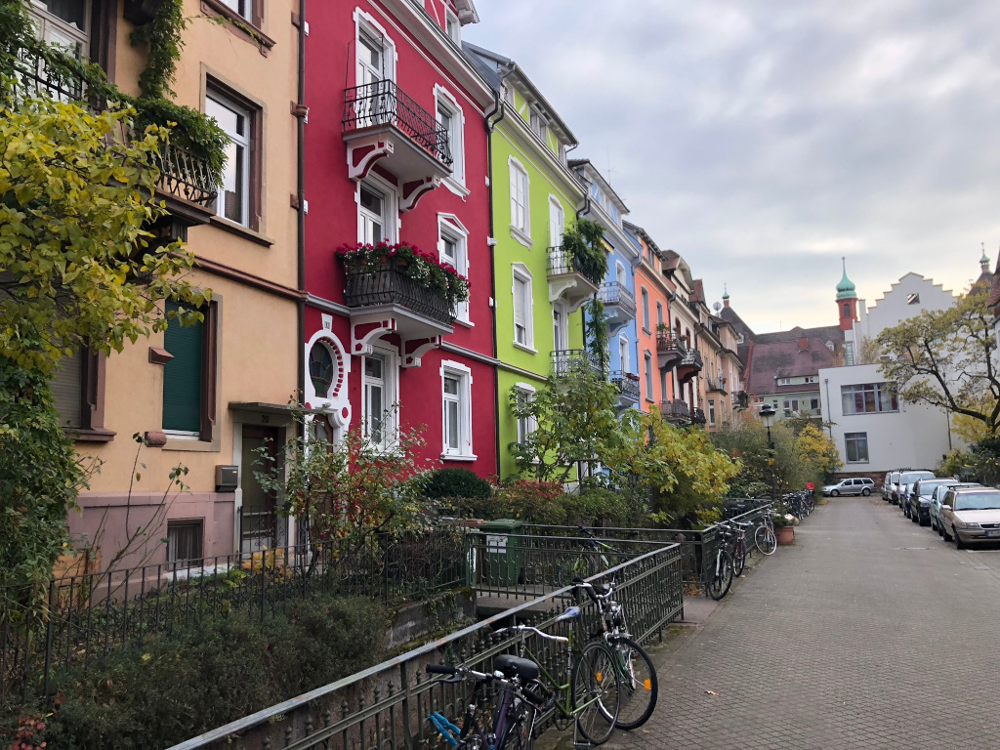

On Leaving and the Beginnings of Things
November 10, 2018
The Flight
You’re sitting in the London Gatwick airport, waiting for a plane to come. You know where you hope this plane will take you, but you can’t know for sure. And yet it doesn’t matter. Why?
Well, it doesn’t matter when you’re operating on two hours of sleep, you missed your first connecting flight because the original flight out of Oakland was an hour late, and you left your parents behind with your home continent. A few extra hours and a few extra pounds aren’t so bad, and they’re certainly better than being stuck in airport limbo.
Ahead is Basel, Switzerland. The airport itself, Basel-Mulhouse-Freiburg, is an international one, outside of country borders, and that last name in the trio — Freiburg — is where you’re headed. This trip has been in the making for months, and that you’re finally seeing it through to completion (or inception, if you’re being really on the nose) is remarkable.
First, the language school. You’re going to Germany to learn German, after all, and a language school is one of the best ways to accomplish that. It’s somewhat expensive, though, and so you’re only attending for the bare minimum required for a student visa — three months. Still a substantial amount of time. After that, you’ll be WWOOFing around Germany (hopefully, if you can stack visas the way you want), which involves staying on local family farms for about a week each and helping with farm work in exchange for room and board. It’s a great way to experience German culture and practice speaking.
You’ve been looking forward to this trip for a whole pile of reasons. It’s your first time leaving home. It’s time you were forced to be independent. It’s a perfect time to catch up on writing, which fell off somewhat near the end of October from the increasing demands of grad school applications. And of course, it’s a time for you to grow, to learn new cultures and customs, to explore cities and villages, to make friends from within the country and without. And though your prelude of a flight was sloppily written, verbose and boring with a chunk torn out and replaced in the middle, you think the rest of this book called Germany will be a good read.
The City
Apparently this is one of those tumorous books with both a prelude and a prologue, for though I arrived on a Friday, my language school started on Monday. I stayed with close family friends until then, and without immediate responsibilities, I spent that first weekend exploring with them. Turns out there’s a lot to see.
{kind=link}
This is Freiburg.
{kind=link}
{kind=link}
{kind=link}
{kind=link}
And this is Freiburg, too.
It’s beautiful. Like many European cities, Freiburg blends modern life with ancient architecture, and the result is centuries of culture. I experienced just a taste these first few days.
The Freiburg market is a farmer’s market open six days a week, replete with trinkets and fruit and wurst of all kinds. We stopped there briefly before hiking into what looks to be the Black Forest but is really only a piece of it, around which the city flows. The very top of the watchtower we hiked to is visible from a park called Stadtgarden (top- and bottom-right), and the first, large picture was taken from on high. Looking the opposite direction from the base, there’s a lot of city unseen (top-left), including the actual start of the Black Forest in the distance.
We came down from the forested hill and into the neighborhood of my soon-to-be host family (bottom-left). That pastel motif is common in Freiburg, and perhaps Germany as a whole — the same building is repeated in different flavors. In a German class I took at Cal Poly, my undergraduate university, we discussed how many buildings constructed immediately after World War II were made in such a fashion — tileable, simple designs. Perhaps these buildings are examples.
We made it back to the apartment in good shape before setting out again just an hour later. It was far colder, and the underground warmth of El Haso, a vegan restaurant with only two items on its menu, was welcome shelter. I had a surprisingly fantastic burger and salad, and along with my first beer and the company of friends, it was a great night.
{kind=link}
{kind=link}
The next day was filled with more exploring. We saw the university that one of my friends attends, and after a brief stroll around the city and a leisurely brunch back at the apartment, it was time to go. We walked the half-mile up to my host family’s house, glimpsed some faraway windmills, and then suddenly we were knocking on the door. There was time for a little merciful, friend-assisted small talk before I was on my own, a stranger in a strange house.
The School
Well, the family wasn’t really strange at all. And that was for the best — I had my hands full with everything else. I’m not going to describe every day of Alpadia in gruesome detail — I know I can ramble, but that would be pushing it. That said, here’s a short(er) summary.
It started out hard. Like, soul-crushingly hard. Should-I-switch-into-an-easier-class hard. It’s all in German, of course, since as an international school there’s no guarantee all the students share any other language, and explaining everything in the same language they’re teaching is good for immersion. But that makes it far harder than my Cal Poly German course, taught in English, ever was. I spent the first day misunderstanding instructions, stumbling over the most basic of words, and being totally unable to communicate with any of my classmates — in the classroom, I couldn’t speak German, and outside, everyone grouped off by mother language, and English was (somewhat surprisingly) nowhere to be found. There was, and is, one other native English speaker in my class, but he and I haven’t really hit it off.
So that first day was a hard and tiring and rather lonely four hours. Six, if you count travel time. I came back to my room in my host family’s house, tried and failed to write, and was generally in a low mood for the rest of the night. The worst part about my class was that very nearly everyone else seemed to speak with no difficulty, knowing every word they needed and talking without stumbling anywhere near as much as I did. I thought they were miles ahead, that I was probably in the wrong class, and that — worst of all — I would never be as good as them without months of work.
Melodramatic enough yet? I’m sure this seems a little over-the-top, but sitting in a class you don’t understand, in a city you can’t read, in a country whose language you can’t speak — it’s an emotionally abrasive experience, or at least it was for me.
And yet, that very night, my hopes were lifted just a little, for speaking over dinner with Gabi, my host mother, was a fair bit easier than it had been the night before. And over the next five days, between the language school’s formality and my host family’s kindness, I’ve simply gotten better. A lot better. Not enough to remember all the words I know, not enough to know that many in the first place, and certainly not enough to never trip over all of them, but enough. But see, here’s the thing. It’s easy to read that and see a simple story — I was overwhelmed on Monday, but I was overreacting, and by the end of the week, I knew I was in the right class. But that’s cutting out five days of waking up stupidly early, speaking German for half an hour over breakfast, walking an hour in the cold to four hours of school that’s mentally draining no matter what class I’m in, walking back in the cold, working on homework for the next day, and then eventually speaking more German over dinner. My point? It was hard. And even yesterday morning, I wished I didn’t have this class, that I could sleep in and relax. Stories can gloss over difficulty with cuts and montages. In real life, five days of hard work is five days, and no less.
The Rest
So I’m settled in after a week. Finally. I’ve found a coffee shop / bakery I’m fond of. I’ve registered that I live here with the city. I’ve gone hiking once more in the little piece of the Black Forest that’s inside Freiburg (pictures below). I’ve gone grocery shopping, and screwed up somehow every time — just yesterday, I heard elf vier und zwanzig without the elf, turning €11.24 into €24. I gave the cashier €25 and got a weird look and a lot more money back than I expected. It’s hard to make yourself speak a language you only barely know when your attempts are guaranteed to be riddled with failures, large and small. It gives me a whole lot more empathy for immigrants everywhere, learning and speaking languages they probably don’t want to in the first place. And it makes me appreciate more and more that English is the second language of the world and the first of the internet. It’s nearly always possible to either speak English with someone or find someone else who can, and that’s a luxury few people enjoy — certainly few others from the language school.
{kind=link}
{kind=link}
{kind=link}
I’ll be happy to return to the US, to see my friends and family (and my dog, who’s both) and relax in a language I can truly speak. But that’s three months away at the very least, and probably five. And I imagine my position will change in the coming weeks — as I settle in, Freiburg will agree with me more, and perhaps there will come a time when I don’t want to leave at all. Ich kann nicht sagen. But as long as I’m here, I’m prepared to make the most of it.
Lost in time and space
Aimless drifting in a far-off place
Hurtling through the vast unknown
Staring straight into a pure black void
Lord Huron, Lost in Time and Space